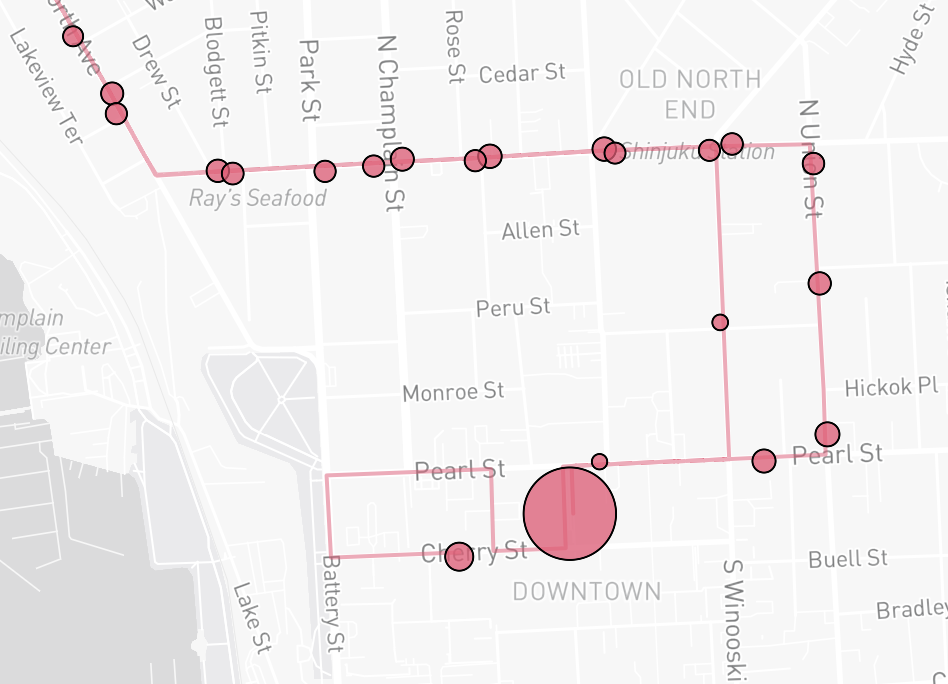
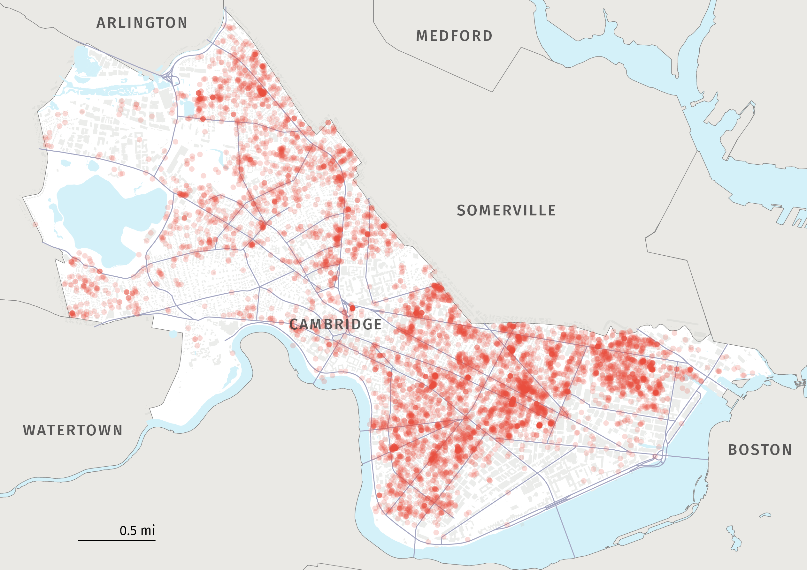
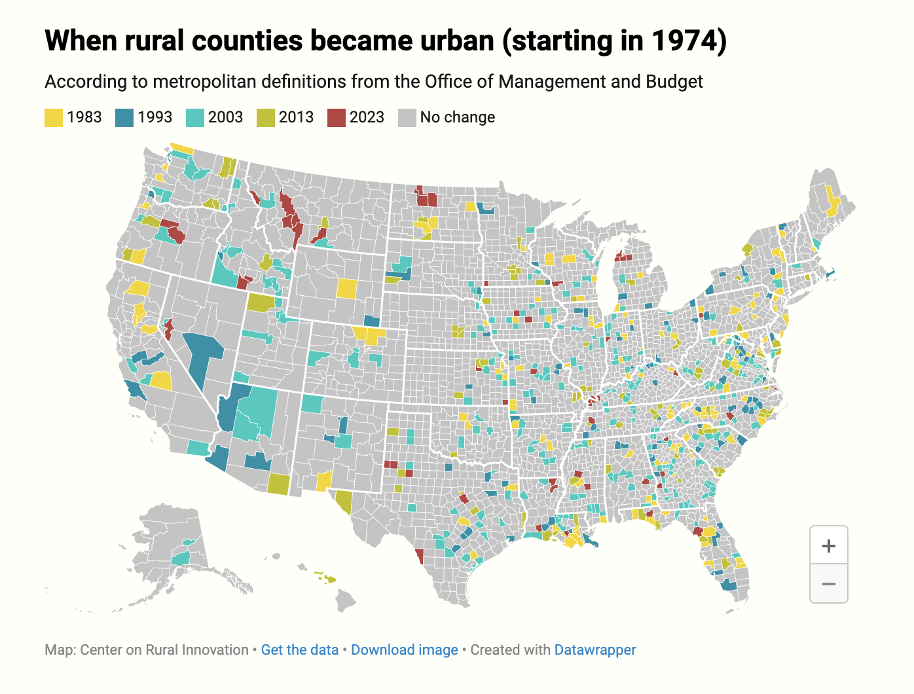
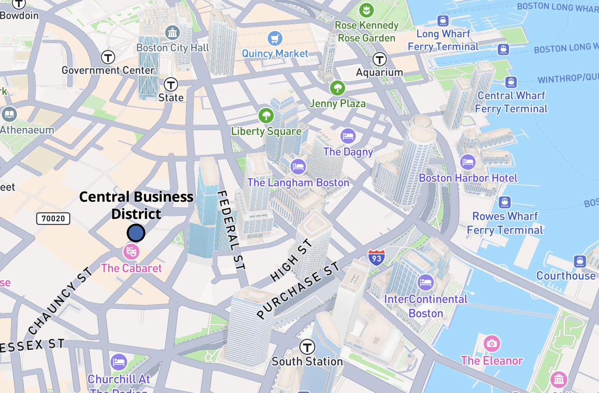
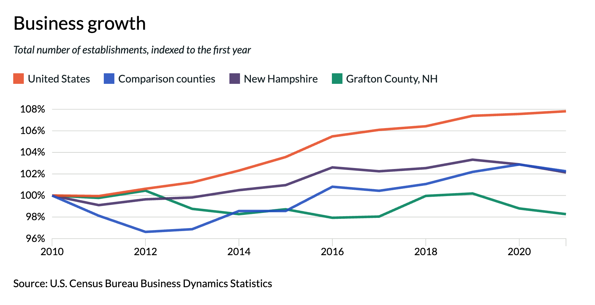
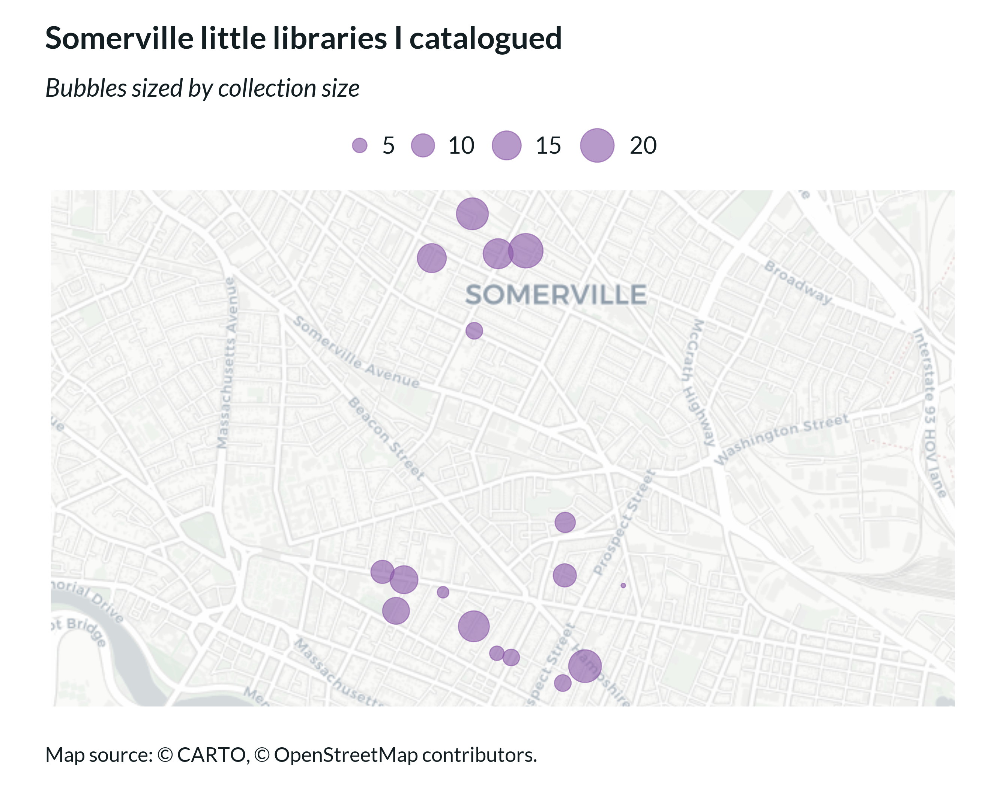
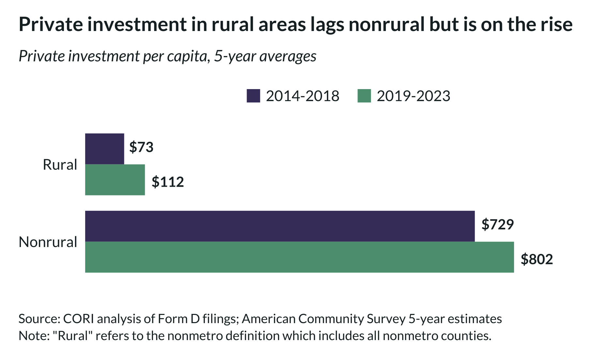
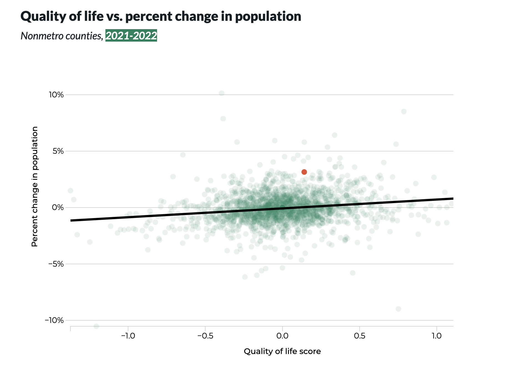
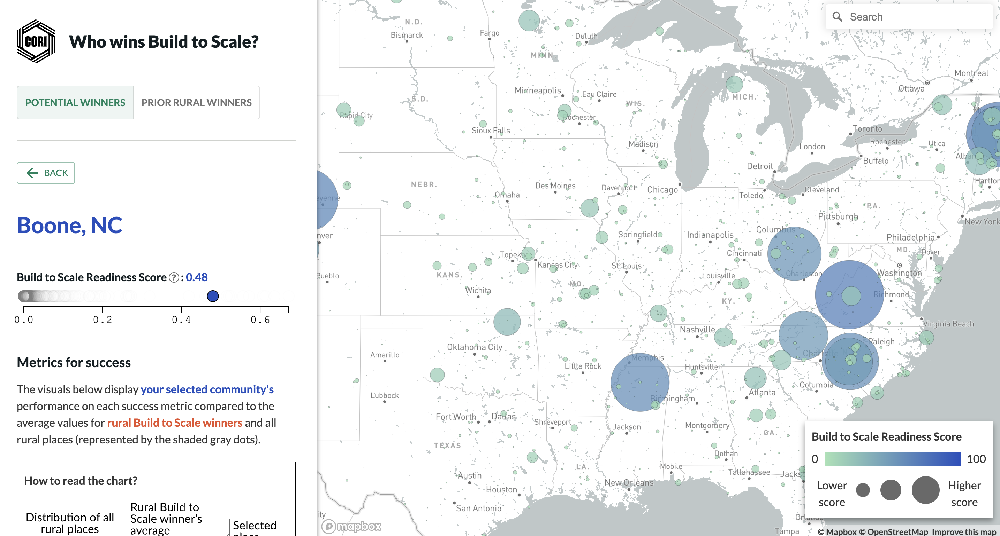
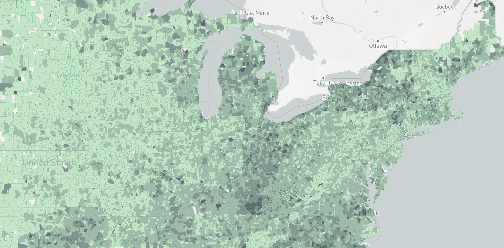

I am a civic technologist based in Vermont. I currently work at Green Mountain Transit. You can find some of my work below and get in touch with me at camdenblatchly@gmail.com.

Datasets and dashboards that help riders, planners, and community members better understand Green Mountain Transit’s system.
Tags: Transit planning, Open government
Tools: R, Python, GIS

And the city's new strategies for addressing them
Tags: Municipal services, Urban data
Tools: QGIS, Adobe Illustrator, Python, R

How rural definitions contribute to perceptions of rural decline
Tags: Regional planning, Demographic change
Tools: R, Datawrapper

Six perspectives on the heart of the city
Tags: Urban geography, Mapping, Metrics
Tools: Mapbox, R

The key metrics that define CORI's economic development model
Tags: Regional indicators, Economic development
Tools: React, D3.js, R

A data-driven look at the books, genres, and trends across 17 neighborhood collections
Tags: Field data collection, Community mapping, Data storytelling
Tools: Python, R, Pandas

How lack of capital stifles innovation in rural America
Tags: Economic development, Rural policy, Spatial analysis
Tools: R, React, Mapbox

How remote work is shifting the geography of jobs
Tags: Economic geography, Remote work
Tools: React, D3.js, R

Identifying rural communities with the highest potential for success
Tags: Innovation policy, Regional competitiveness
Tools: React, D3.js, Mapbox

Analyzing the impact of a federal broadband subsidy that supported 23 million households before ending in 2024.
Tags: Digital equity, Broadband planning
Tools: React, D3.js, Mapbox